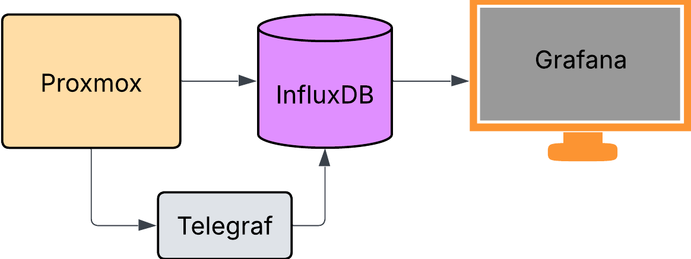
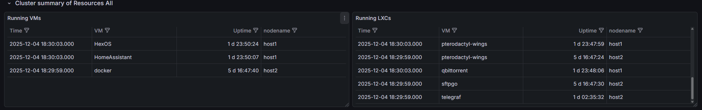

Game server service
What's the goal?
I wanted a way to easily host and manage game servers on my homelab.
I chose Pterodactyl as the platform for this because it's a well established and widely used
solution for hosting game servers.
It allows me to easily manage multiple game servers from a single interface, and it's also
relatively easy to set up and maintain.
How is this achieved?
The game server service is hosted on a dedicated LXC in my homelab, and it uses Pterodactyl as
the platform for hosting and managing the game servers.
I have set up a vpn connection to a cheap VPS which ip forwards traffic from certain ports back to the LXC.
Architecture Diagram

What the heck is Telegraf there for?
Because I wanted to be able to monitor the status of LXCs and VMs and the existing panel for
running LXCs and VMs isn’t quite as clean as I would like.

I figured I could make my own.
Part of the reason I did this was just for the sake of learning.
It will be beneficial in the future if I know how to configure and set up dashboards so that if I want to do something unique with them later, I can.
For example: Setting up a custom dashboard for a server rack display.
What does Telegraf do here?
Telegraf is used to collect metrics from the Proxmox host about the running LXCs and VMs.
It then sends this data to InfluxDB where Grafana can read it from to display on a custom
dashboard I made for this purpose.
This data shows:
-Running LXCs and VMs
-CPU usage per LXC/VM
-RAM usage per LXC/VM
-Disk usage per LXC/VM
-Network usage per LXC/VM
for this project however I only used it to display the running status of LXCs and VMs on the
dashboard.
Challenges faced
due to how Telegraf collects data from the Proxmox host, there where 2 main issued I have to
over come:
- API tokens
- calling data for all LXCs and VMs
Problem One
The first issue was trivial, as I already have a Proxmox user set up for auditor access.So I used Proxmox's GUI to create an API token under that user and then, propagated permissions accordingly.
Problem Two
The second issue however required a bit more creativity.Telegraf's Proxmox input plugin requires you to specify the host you want to collect data from.
This means that if I wanted to add ore remove nodes from my system, I would have to manually update the Telegraf config file each time.
To get around this, I wrote a small bash script that uses the Proxmox API to get a list of all nodes in the cluster, then iterates through that list and adds each node to the Telegraf config file.
How do we display this data in Grafana?
Once the data is being collected by InfluxDB, displaying it in Grafana is fairly straight
forward.
You just need to create a new dashboard and add the appropriate panels to display the data you
want.
from(bucket: "${Bucket}")
|> range(start: -1h)
|> filter(fn: (r) => r._measurement == "proxmox")
|> filter(fn: (r) => r._field == "status")
|> group(columns: ["vm_name", "vm_type"])
|> last()
|> keep(columns: ["vm_name", "vm_type", "_value"])
|> rename(columns: {vm_name: "Name",vm_type: "vm/lxc", _value: "status"})
|> group() // Ungroup everything into a single table
It filters the data to only show the status field from the Proxmox measurement, then groups the data by vm_name and vm_type, and finally displays the last value for each group.
This query also utilised the dashboard variable "Bucket" which I set to the name of the InfluxDB bucket I was using to store the Proxmox data. This was a neat trick I learned by reviewing the other pre made panels.
Conclusion
Overall this was a fun little project to work on and I learned a lot about monitoring systems
and how to set up custom dashboards in Grafana.
I actually had a previous solution where I used node exporter and Prometheus to collect data
from the Proxmox host, but during the process I found out Proxmox had an integrated solution so
I decided that would likely have been more reliable.
If you have any questions or want to know more about how I set this up, feel free to reach
out!